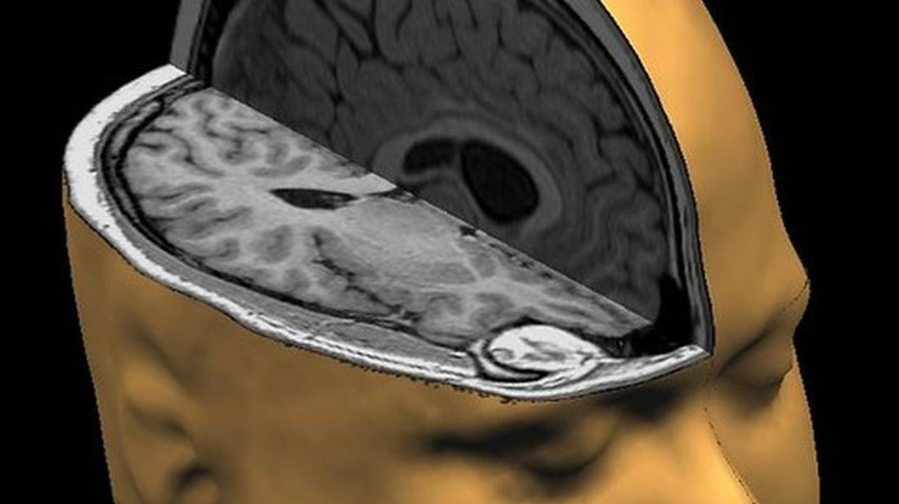

Half of Trigeminal Neuralgia Cases Are Misdiagnosed. A Small Study Points to an Unlikely Alternative That May Ease the Pain, Whatever the Cause.
Patients lose healthy teeth to a nerve condition that dentists cannot see on an x-ray. A 2022 paper reports that a herbal and homeopathic protocol by Biogetica helped 68% of them. We looked at what that paper does and does not establish.
Most people with this condition can tell you how many teeth they lost before anyone got it right.
Two. Three. Sometimes an entire quadrant. Root canals on healthy molars. Extractions that changed nothing, because the problem was never in the tooth. It was in a nerve behind it, and the dentist had no way of knowing that from an x-ray.
This is not a rare failure. Studies in Dutch general practice found trigeminal neuralgia is misdiagnosed in up to 48% of cases. Roughly half. And because the pain sits in the upper and lower jaw, the first person most patients see is a dentist, which is exactly how irreversible procedures end up being performed on teeth that were never the problem.
Management of trigeminal neuralgia, a multi-centre case study in general practice, 2023.
By the time somebody finally says the words trigeminal neuralgia, most people have been in pain for a year or more, have been quietly treated as though they were exaggerating, and have lost teeth they will not get back.
An Indian integrative medicine company called Biogetica sells a protocol for this condition, and it is the subject of the study below. Here is the number it reports, followed immediately by what is wrong with it.
In 2022, a group of physicians published a study in the International Journal of Research in Ayurvedic Pharmacy. It examined a combination of Cronisol-D, OM 13 TN Formula and Neuralease. It reported that 68% of trigeminal neuralgia patients experienced relief, without the side effects associated with the standard drugs.
Sixty-eight percent means thirty-two percent did not.
Nearly one in three people in that study took the protocol and it did not do for them what it did for the others. That figure belongs beside the headline rather than in a footnote. Anyone already let down by three treatments is entitled to the failure rate before the price.
See the Kits >>Free doctor consult first · 100% money-back guarantee · code READY for 10% off
First, What This Condition Actually Is

The trigeminal nerve is the fifth cranial nerve. It carries sensation from your face, and it splits into three branches: one above the eye, one across the cheek and upper jaw, and one along the lower jaw.
When it misfires, the result is a sudden electric stab down one side of the face. Seconds to minutes. Triggered by nothing dramatic at all: chewing, talking, brushing your teeth, a cold draught through a window.
It is commonly called the suicide disease. That name is not marketing language invented by supplement companies. It is what clinicians have called it for decades, and the reason is documented: people living with trigeminal neuralgia carry a measurably higher risk of suicide than the general population.
Pain scales are a blunt instrument, but patients who have had both routinely rate a trigeminal attack above childbirth and above kidney stones. The attacks arrive without warning, several times an hour in a bad week, and there is nothing to do but wait out the twenty seconds. What breaks people is rarely a single attack. It is the arithmetic of a decade of them, plus the fact that nothing shows on a scan and almost nobody around them believes it is that bad.
Anyone reading this while in that place should know two things. There are treatments that work, several of them, and they are set out below. And if the thought of ending it has crossed your mind, that is a documented feature of this condition and not a personal failing. Please tell your doctor that part too, not just the pain score.
It is not common. UK primary care records covering 6.8 million people identified 8,268 cases, an incidence of about 27 per 100,000 person-years. It affects women more often than men, and the incidence climbs steeply with age. In men over eighty it reaches 45 per 100,000.
Being uncommon is part of the problem. It is why so many clinicians see it once or twice in a career, and why it takes so long for anyone to name it.
What Conventional Treatment Offers, and What It Costs
Carbamazepine works, and if you are on it, keep taking it. It is the established first-line treatment and the only drug with a specific FDA indication for trigeminal neuralgia. Nothing on this page is a reason to stop a prescription, and you should not change one without speaking to your own neurologist.
What the literature also records is the cost of staying on it. Carbamazepine increases pain relief compared with placebo, and it increases adverse effects: drowsiness, dizziness, rash, ataxia, liver damage. In one study of patients on carbamazepine or oxcarbazepine, the most frequently reported problems were tiredness, memory problems, sleepiness, difficulty concentrating and unsteadiness.
Then there is the harder part. For many people the dose that worked last year does not work this year, and the choice becomes a higher dose with heavier side effects, or a procedure.
Opioids are the option patients most often ask for and the one specialists are most reluctant to give. Not only because of dependency and tolerance, though both are real, but because trigeminal neuralgia responds poorly to them. It is a nerve-firing problem rather than a tissue-damage problem, and opioids are built for the second. Patients frequently end up dependent on a drug that was never going to control this particular pain.
Gamma Knife radiosurgery focuses radiation on the nerve root to damage it enough that it stops transmitting. There is no incision and no general anaesthetic, which is why it appeals to older patients and to anyone unfit for surgery. The trade-offs are that relief typically takes weeks to months to arrive, a substantial share of patients see the pain return within a few years, and facial numbness is a common and sometimes permanent result. It is also expensive.
Microvascular decompression is the one that actually addresses a cause. In a large share of cases the trigger is a blood vessel resting against the nerve root. A surgeon opens behind the ear, lifts the vessel away and pads it. For the right patient the results are the best available anywhere: high rates of complete relief, often lasting a decade or longer, with the nerve left intact rather than deliberately damaged.
It is also brain surgery. General anaesthetic, a craniotomy near the brainstem, several days in hospital and weeks of recovery. The recognised risks include hearing loss on that side, facial weakness, leakage of spinal fluid and, rarely, stroke. It is offered mainly to younger and fitter patients for exactly that reason, and it is not a realistic option for a great many people who have this condition.
The Five Options, Side by Side
Swipe the table sideways to see every column
| Option | What it does | Main trade-off | Typical cost |
|---|---|---|---|
| Carbamazepine | Calms nerve firing. First line, and the only drug with a specific FDA indication for this condition. | Drowsiness, memory problems, unsteadiness, liver monitoring. Effect often fades over years. | Low |
| Opioids | Blunt pain signalling generally. | Work poorly on this specific pain. Dependency and tolerance. Most specialists avoid them here. | Low to moderate |
| Gamma Knife | Radiation damages the nerve so it stops transmitting. No incision. | Weeks to months before relief. Facial numbness common. Recurrence within a few years for a substantial share. | High |
| Microvascular decompression | Moves the blood vessel off the nerve. Addresses a cause rather than a symptom. | Brain surgery. Hearing loss, facial weakness, CSF leak, rare stroke. Not offered to everyone. | Highest |
| Biogetica protocol | Nerve support and inflammatory pathways rather than blocking the signal. Taken alongside existing treatment. | Evidence is one small study in a non-indexed journal. Takes months. Helped 68% and not the other 32%. | $98 to $449 |
Costs vary widely by country and insurer. The success figures quoted for surgical and medical options use different endpoints and different populations, so they cannot be read as a like-for-like ranking. Anyone comparing them, this page included, should say so plainly.
Every one of these is a legitimate option and some people should take the surgical ones. Nothing here is an argument against an operation that works. But there is a large group sitting between the drug that has stopped working and the procedure they are not ready for, or not eligible for, and conventional medicine offers that group very little.
See What the Fifth Option Involves >>Free doctor consult first · from $98 · 100% money-back guarantee
Every one of these is a legitimate medical option and some people should take them. Nothing here is an argument against surgery. But there is a large group of people sitting between the drug that has stopped working and the operation they are not ready for, and almost nobody is offering that group anything at all.
Talk to a Doctor First >>No card required · they are allowed to tell you no
What The Study Found, and What It Does Not Prove
Here is the finding, stated once, plainly. A group of physicians reported that the combination of four Biogetica formulas improved outcomes for 68% of trigeminal neuralgia patients, without the side effects that come with the standard drug regimen.
A separate paper, published on ScienceDirect, reported that trigeminal neuralgia patients using natural remedies obtained an overall reduction of more than 60% in both pain intensity and attack frequency.
Both papers are linked and public. Read them before you decide anything.
The caveats matter as much as the number.
The 2022 paper was published in a specialist Ayurvedic pharmacy journal, not in a general medical journal, and it is not indexed in the same databases your neurologist searches. That does not make it false. It does mean it has not been through the same level of scrutiny as a large randomised trial, and you should weigh it accordingly.
It also examined the manufacturer's own protocol. Research funded by the company selling the product is common across the whole of medicine, pharmaceutical medicine included, but readers are entitled to know it up front.
And 68% is not everyone. Read it next to the honest numbers on the other side: surgical studies measure complete pain relief, medical studies typically count 50% pain reduction as a success. These are not the same measurement, and anyone comparing them directly, us included, should say so.
What the evidence supports is narrower than the marketing around it. There is a published report that this protocol helped a majority of the people studied, without the drowsiness, memory problems and liver monitoring that come with the standard drugs. That is a real thing. It is not a cure, and no honest reading of the paper makes it one.
Why the Misdiagnosis Problem Matters Less for This Option Than the Others
Facial pain has several distinct causes and they do not all respond to the same thing. A blood vessel pressing on the nerve root. Demyelination from multiple sclerosis. A tumour. Post-herpetic damage. Dental and sinus problems that mimic all of the above. And a sizeable group where every scan is clean and no cause is ever identified.
Most conventional options are gated on which of those you have. Microvascular decompression only helps if there is a vessel to move, and does nothing for pain driven by MS. Gamma Knife targets a nerve root. Dental work fixes nothing at all if the tooth was never the problem, which is precisely how so many patients lose healthy molars before anyone reaches the right diagnosis.
The Biogetica protocol is built differently. Cronisol-D, Neuralease and the TN Formula are aimed at nerve support and inflammatory pathways rather than at a specific structural cause. GABA to reduce neuronal excitability, lion's mane studied for nerve growth factor, Bacopa monnieri for nerve structure, willow bark and devil's claw on the inflammatory side.
That is a claim about scope, not about superiority. It means the protocol is not conditional on getting the structural diagnosis right first, which matters a great deal when up to half of cases are misdiagnosed and the average patient waits more than a year for a correct one. It does not mean it works better than surgery for someone who has a vessel that can be moved.
There is a second structural difference worth naming. Carbamazepine suppresses symptoms and has to be taken continuously for as long as it keeps working, which is why dose escalation is such a familiar story. The protocol is sold as a four month course rather than an indefinite prescription, because nerve support is not something that produces a result in days and is not designed as an every-day-forever intervention. Whether that holds for any individual is exactly what the study did not settle for the 32%.
Check Whether It Fits Your Diagnosis >>Free consult with a doctor · they can tell you it is not right for you
What Is Actually in the Salvation Kit
Six products. Every ingredient and every milligram is published in full on the product page. No proprietary blend, no hidden quantities, nothing you cannot take to your own neurologist before you order.
Cronisol-D. The nutraceutical core. GABA at 15mg, the inhibitory neurotransmitter that reduces neuronal excitability. Lion's mane at 30mg. Cat's claw at 50mg, ginkgo biloba at 45mg, devil's claw at 45mg, aloe vera and black currant at 35mg each, willow bark at 35mg, California poppy and horsetail at 20mg, Hypericum at 20mg. Then L-tryptophan, leucine, L-methionine, phosphatidyl-L-serine, magnesium gluconate, vitamin B6 and B12.
Neuralease. The Ayurvedic tablet, built on Bacopa monnieri at 200mg with Pluchea lanceolata, liquorice, amla, haritaki, vetiver and others, traditionally used to support nerve structure and function.
TN Formula. Homeopathic. Aconite 30, Hypericum 200, Hekla Lava 30, Spigelia 30.
OM 13 Formula. Potentized bioenergetic impressions of peripheral nerve endings and the trigeminal nerve, containing no actual molecules.
Equilibrium and Equilife. The two additional formulas that distinguish the Salvation Kit from the smaller Freedom Kit.
Two of those four components are homeopathic, and that requires a plain statement. As the United States Federal Trade Commission requires of anyone selling homeopathy: there is insufficient scientific evidence that homeopathy works, and homeopathic claims rest on theories from the 1700s that are not accepted by most modern medical experts. That position and the study result both appear on this page. Readers can weigh them against each other.
The company's doctors ask patients to stay on the protocol for four months, which is why the kits are sized the way they are. Several ingredients target nerve support rather than pain blocking, and that is not a three-day effect.
Every new patient speaks to one of the company's doctors before ordering. The consultation is free, it happens before any money changes hands, and the doctor can decline to recommend the protocol. Given how often this condition is misdiagnosed, that conversation is worth having even if nothing is purchased.
4 month supply, 100% money-back guarantee, and CODE: READY takes 10% off today.
See Every Ingredient >>Every milligram published · take it to your neurologist
There Is More Than One Kit, and the Cheapest One May Be Enough
The advertiser's site lists several protocols and the difference between them is not obvious from the names, so here it is in plain terms.
Nobody is expected to start at the top. The $98 kit exists so that a first course costs less than a month of most private neurology appointments, and the consultation decides whether anything larger is warranted.
Freedom Kit. The four-product core: Cronisol-D, TN Formula, OM 13 and Neuralease. Sold in three lengths. 40 days at $98, 80 days at $176, 160 days at $294. This is where most people start.
Salvation Kit. The same four plus Equilibrium and Equilife. The doctor recommended four month supply runs $449.10, reduced from $499.
Deliverance Kit. Sits between the two. The four month supply is $386.10.
Liberation and Essentials Kits. Built around myelin sheath sarcodes, one of them with topical CBD, at $161 and $126. These target the protective sheath around the nerve rather than the pain signal.
Nobody should buy the biggest box simply because it sits at the top of the page. The consultation exists partly to work out which of these fits, and a doctor who moves a patient down to the $98 kit is doing the job properly. All of them carry the same 100% money back guarantee.
Compare All the Kits >>From $98 · free doctor consult first · 100% money-back guarantee
Six Things You Can Check Before You Spend Anything
No reader should trust a company because a page about it sounded candid. Here is what can be verified independently, before any money changes hands.
The research. Both studies are public and linked, as is the FTC position on homeopathy. Read all three and reach a different conclusion if the evidence takes you there.
The formulation. Six products, every component and every milligram published openly.
The practitioner. A consultation with one of the company's doctors, free, before purchase. The panel and their registrations are listed publicly.
The manufacturing. GMP and WHO registered facilities, registered appropriately as supplements, homeopathic attenuations or Ayurvedic herbs.
The refund. 100% money back. No questions, no hoops.
The failure rate. It is in the headline of this page. Compare that against the last five pages you read about this condition.
That is six things you can check for yourself. Most pages in this market give you none.
Why Nobody Should Call This a Cure
The most common question about protocols like this one is why the company will not simply say it works.
Its competitors do say it. Search the condition and the first page of results is thick with sites promising permanent elimination of the pain. Those pages convert better than cautious ones, which is precisely why so many of them exist.
The recipe is not complicated. Put the word cure at the top, drop the failure rate, omit the FTC position on homeopathy, and hope nobody reads too closely.
Readers of this page are better served knowing all three of those things.
There is also a plain medical fact underneath it. Trigeminal neuralgia has no cure. Not from this protocol. Not from carbamazepine, which manages it. Not reliably from Gamma Knife, which damages the nerve and sometimes buys years rather than a lifetime. Microvascular decompression comes closest for some people and still carries no guarantee.
What exists is management. Fewer attacks. Longer gaps. Less of your day organised around not triggering it. Anyone promising you more than that is either uninformed or counting on you being desperate enough not to check.
My Promise to You
What the advertiser commits to, in its own words. No claim to cure a condition that has no cure. The failure rate published alongside the success rate. Every formulation disclosed in full, to the milligram. Every cited study public and linked, including the regulator's position on the discipline that two of the four components belong to. A free consultation with a qualified doctor before purchase, and that doctor may decline to recommend it. 100% money back. Each of those is checkable before a card is entered.
That set of commitments is checkable, which is the only reason it is worth printing.
The only people who cannot make a promise like this are the ones who already know what is really in their bottle.
Questions People Ask Before Booking the Consultation
Can I take this alongside carbamazepine?
Yes, and nobody should stop an anticonvulsant to start it. The protocol is designed to sit alongside conventional treatment.
One point that matters and is easy to miss: Cronisol-D contains Hypericum, better known as St John's wort, which is known to interact with a number of prescription drugs including some anticonvulsants. That is a real interaction, not a theoretical one, and it is the single most important reason to have the consultation and to tell both doctors exactly what you are taking. Bring the full ingredient list to your neurologist.
Is it safe? Are there side effects?
It is generally well tolerated and it does not carry the drowsiness, memory problems or liver monitoring that come with the standard drug regimen. That is the honest comparison and it is the main practical argument for it.
Side effect free is not a claim anyone should make about it. It contains active botanicals. Ginkgo can affect bleeding and matters if you are on a blood thinner or facing surgery. Willow bark is a salicylate and is relevant if you cannot take aspirin. St John's wort interacts with a long list of medicines. None of that makes it dangerous. It makes it a thing to review with a doctor first, which is why the consultation is free and comes before the purchase.
Does it work after Gamma Knife or MVD?
People do use it post-procedure, commonly when pain has returned after a period of relief. What has already been done to the nerve changes what is sensible, so it is a consultation question rather than something to guess at. Have the dates and the operative details to hand.
How long before I would know?
The protocol is sold as a four month course and the doctors ask patients to complete it. Reports of change tend to cluster around the four to six week mark rather than the first few days, which is consistent with ingredients aimed at nerve support rather than at blocking a pain signal.
If you want a fast answer, this is not that. Anything promising one for this condition is worth being suspicious of.
What if it does not work for me?
Every kit carries a 100% money back guarantee. Given that the study behind it reports roughly one in three people saw no benefit, that guarantee is not a flourish. It is the mechanism by which a third of buyers get their money back.
Which kit should I actually buy?
Most people should start on the $98 forty day Freedom Kit. The larger kits exist for cases where a doctor has a specific reason to recommend them. A consultation that moves someone down to the cheapest option is the consultation working correctly.
Ask Your Own Question on the Consult >>Free · no card required · bring your ingredient list and prescriptions
The Bottom Line
For someone reading this at two in the morning, there are realistically two paths.
The first is to keep reading the pages that promise to eliminate the pain permanently. Some are very well written. A few will take the money. None will do what they said, because what they said is not possible, and six months later the search starts again.
The second is to work on the part of this that is actually within reach. Fewer attacks. Longer gaps between them. Nerve support rather than nerve damage. Alongside whatever a neurologist has prescribed, never instead of it.
That is the whole of what this protocol offers. It is smaller than what the competition promises. It helped 68% of the people in one study and did not help the rest. It is also the only version of the claim that survives contact with the evidence.
The free consultation is the sensible first step. It costs nothing, and given how often this condition is misdiagnosed, that conversation has value whether or not anything is purchased.
Start With the Free Consultation >>4 month supply · 100% money-back guarantee · code READY for 10% off
About this report
Nothing here is medical advice. Trigeminal neuralgia has no cure and no product on this page changes that.
Integrative Health Today · Health Desk
J. H.
In 2007 I was diagnosed with Trigeminal Neuralgia and my neurologist prescribed Tegretol, of which I found that it could damage my kidneys and liver. After taking the kit for TN for three weeks, I've been free of pain since Feb 2015.
Biogetica · advertiser
Thank you for sharing this. For anyone reading: please do not stop carbamazepine or any prescription without speaking to your own neurologist first. Our protocol is designed to sit alongside conventional care.
Elaine R.
Four teeth. Four. Two root canals and two extractions before a neurologist finally said the words. I am not angry at my dentist, he had no way to know, but I would give a lot to have those teeth back.
Marcus D.
This is exactly it. Mine was eighteen months and three practices. The 48% misdiagnosis figure in this article is the first time I have seen anyone put a number on it.
Elaine R.
That number is why I sent this to my sister. She is six months into the same runaround.
Priya N.
Honest question. I am on carbamazepine at a dose that is starting to make me useless at work. Can you take this alongside it or does the doctor make you choose?
Biogetica · advertiser
Alongside. Our doctors will ask exactly what you are on and at what dose during the consultation. We never ask anyone to come off a prescription.
J. F.
The pills have helped in lowering the pain level, without taking heavy prescriptions.
Gordon W.
I will be the sceptic. A study in the company's own field journal, on the company's own product, with the company reporting the result. That is three reasons to be careful.
Hannah B.
All fair, and they say every one of those things themselves in the article. That is the part that got my attention. I have never seen a supplement page volunteer that its own study was not independently indexed.
Gordon W.
Noted, and you are right that they said it first. I still want to read the paper before I decide. Booking the free call in the meantime since that costs nothing.
P. T.
I don't know what I would have done if I hadn't ordered your package and had it on hand. It worked in 5 minutes after I had a terrible excruciating reaction to a laser treatment for this terrible disease.
Theresa M.
Does anyone know how long shipping takes to Australia, and does it get stopped at customs? That has happened to me with supplements before.
Ken A.
Australia here. Around two and a half weeks, no customs issue. Plain packaging.
Rosalind F.
The line about organising your whole day around not triggering it. I have never seen anyone write that down before. I eat on one side. I do not go outside on windy days. My family thinks I am being dramatic.
Nadia S.
You are not being dramatic. Mine goes off if the car heater points the wrong way. It sounds absurd until it happens to you.
D. C.
I've taken your protocol for trigeminal neuralgia for 2 months now and I am pain free. It took about 4 weeks before it really started working. I just told my wife's friend about it who has been suffering for years.
Bill T.
Price stopped me for a month. What changed my mind was the money-back terms. If it does nothing I am not stuck with it, and I have already spent more than that on dental work that fixed nothing.
Aisha K.
Has anyone here had the Gamma Knife and then tried this after? Wondering whether it is worth anything post-surgery.
Biogetica · advertiser
Yes, and it is a good question for the consultation. Our doctors will want to know what surgery you have had and when, because it changes what they recommend.
Ruth E.
Four months feels long until you remember how long you have already been at this. I am on month three.
Simon P.
Reading the actual paper now. It is short. Anyone else expecting more from a published study should temper that, but they did link it and it does say what they claim it says.
Marguerite L.
My neurologist had not heard of the protocol but had no objection to me trying it alongside. Ask yours. Mine was fine about it.
Owen H.
Booked the call for Thursday. Will report back either way.
Book Your Free Consultation >>From $98 · free doctor consult first · 100% money-back guarantee